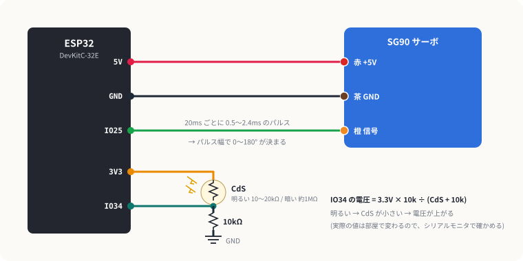
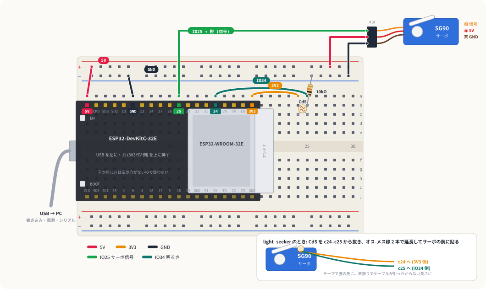
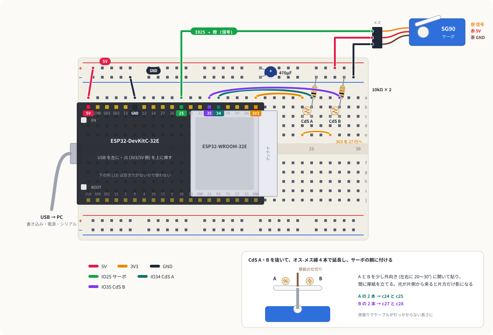

首振りガジェット
明るさセンサー (CdS) とサーボモーターで、首を左右に振って部屋の中でいちばん明るい方向を探し、そっちを向くガジェットを作ります。サーボを動かす (出力)、明るさを読む (入力)、2 つをつなぐ (処理) の 3 つを 1 段ずつ確かめながら進めます。
1しくみ
サーボは「パルスの幅」で角度が決まる
SG90 には 20ms ごとにパルスを送り続けます。パルスの幅が 0.5ms なら 0°、2.4ms なら 180° で、その間は幅に比例した角度で止まります。ESP32 では PWM (LEDC) を 50Hz・16bit にして、デューティで幅を作ります。
デューティ = パルス幅 ÷ 20ms × 65535 (例: 90° = 1.45ms → 4751)
CdS は「明るいと抵抗が下がる」抵抗
CdS と 10kΩ を直列にして 3.3V と GND の間に入れると、真ん中の電圧は 3.3V × 10k ÷ (CdS + 10k) になります。明るいほど CdS の抵抗が小さくなり、電圧が上がります。この電圧を IO34 のアナログ入力で読みます。

2配線
ESP32 は いつもの向き (USB を左、J1 列を上) で 1〜19 行に挿します。使うのは上の a 列に空いた穴と、上の電源ライン 2 本です。

| # | どこから | どこへ | 役割 |
|---|---|---|---|
| 1 | a1 (5V) | 上の + ライン (赤線) | 5V を配る |
| 2 | a6 (GND) | 上の − ライン (青線) | GND を配る |
| 3 | a19 (3V3) | a24 | CdS の上側に 3.3V |
| 4 | CdS セル | c24 と c25 | 向きはない |
| 5 | 10kΩ | b25 と 上の − ライン | 分圧の下側 |
| 6 | a15 (IO34) | a25 | CdS と 10kΩ の間の電圧を読む |
| 7 | a11 (IO25) | サーボの 橙 | パルス (信号) |
| 8 | 上の + ライン | サーボの 赤 | 5V |
| 9 | 上の − ライン | サーボの 茶 | GND |
サーボのコネクタはメスなので、オス-オスのジャンパー線をそのまま挿せます。
3段階 1: サーボだけ動かす
配線 7〜9 だけで動きます。20° と 160° の間をゆっくり往復します。
- サーボの腕がなめらかに往復する
- シリアルモニタに
angle 20° pulse 711 usのように 20° ごとに出る
サーボが動き出す瞬間に電流が多く流れ、USB の 5V が下がって ESP32 がリセットされています。上の + ラインと − ラインにまたがって 470µF の電解コンデンサーを挿すと、瞬間的な電流をコンデンサーが肩代わりしてくれます (挿し方は段階 4 の図。足の長い方を + ラインへ)。それでも直らなければ、PC の別の USB ポートか、AC アダプタ付きの USB ハブにつなぎ替えてみてください。
4段階 2: 明るさで角度を変える
配線 1〜9 を全部つなぎます。明るいほど 160° 側、暗いほど 20° 側を向きます。
- 書き込んだら「ツール → シリアルプロッタ」を開く (115200 baud)。
mVとangleの 2 本の線が出る。 - CdS を手で覆ったときの mV を
DARK_MVに、スマホのライトを当てたときの mV をBRIGHT_MVに書いて、もう一度書き込む。 - 手をかざしたり離したりして、サーボが追いかけてくれば OK。
- 覆うと mV が下がり、ライトを当てると上がる (逆なら CdS と 10kΩ の位置を見直す)
- mV がずっと 0 付近 → a19 → a24 の 3V3 が来ていない。ずっと 3000 付近 → 10kΩ が GND に届いていない
5段階 3: いちばん明るい方向を探す
CdS を c24–c25 から抜き、オス-メスのジャンパー線 2 本で延長して、サーボの腕の先にテープで貼ります (もう片方は c24 と c25 へ)。首を振りながら 5° ごとに明るさを測り、いちばん明るかった角度を向いて 3 秒止まる、をくり返します。
- シリアルモニタに角度ごとの棒グラフが出て、いちばん長い行に
<- ここと付く - 窓やスタンドライトのある方向を向く。ライトを動かして次のスキャンを待つと、向きが変わる
CdS は光が変わってから抵抗が落ち着くまで 20〜30ms かかります (データシートの応答時間)。サーボが止まるのと合わせて 60ms 待ってから測っています。短くすると、1 つ前の角度の明るさを引きずってピークがずれます。
6段階 4: 2 つの CdS で光を追いかける
段階 3 は首を振りきってから向きを決めるので、光を動かしても次のスキャンまで追いかけません。CdS を 2 個にして腕の左右に付け、明るい側へ少しずつ回り、2 個が同じ明るさになったら止まるようにすると、スマホのライトを動かしたときに首がついてきます。
追加する配線
段階 2 の配線 (1〜9) はそのまま。CdS をもう 1 組と、サーボの電源を安定させるコンデンサーを足します。

| # | どこから | どこへ | 役割 |
|---|---|---|---|
| 10 | e24 | e27 | 24 行の 3.3V を 27 行にも |
| 11 | CdS B | c27 と c28 | 向きはない |
| 12 | 10kΩ | b28 と 上の − ライン | CdS B の分圧の下側 |
| 13 | a14 (IO35) | a28 | CdS B の明るさを読む |
| 14 | 電解コンデンサー 470µF | 上の + ラインと − ライン | 足の長い方 (+) を + ラインへ。帯のある側が − |
段階 2 の CdS (c24–c25) が CdS A、足した方が CdS B です。どちらもオス-メス線で延長してサーボの腕に貼り、少し外向きに開いて、間に厚紙の仕切りを立てます。光が片側から来ると、仕切りの影でもう片方が暗くなります。
+ と − を逆に挿すと、膨らんだり破裂したりします。足の長い方が +、本体の帯 (− の印) がある側が − です。挿す前にもう一度見てください。
スケッチ
- 書き込んで、シリアルプロッタ (115200 baud) を開く。
A・B(mV)、diff(差)、angleが出る。 - 部屋の明かりだけの状態で
diffが 0 付近か見る。いつもどちらかに偏るなら、CdS の個体差。B_SCALEを 1.1 や 0.9 にして 0 に寄せる。 - スマホのライトを片側から当てる。光の方へ回れば OK。逃げるように回ったら
DIRECTIONを-1にする。
- ライトをゆっくり左右に動かすと、首がついてくる
- ライトを正面に置くと、少し揺れてから止まる (止まらずにブルブルするなら
DEADBANDを上げるかGAINを下げる)
7改造のアイデア
- 腕に小さい旗やキャラクターを付けて、明るい方を指さす置物にする。
- Freenove の ESP32 で組み、基板のフルカラー LED を左右の明るさの差で色が変わるように光らせる (赤 = 左が明るい、青 = 右が明るい)。
- 障害物回避カーの HC-SR04 をサーボに載せて、左右の距離を測ってから曲がる向きを決める。